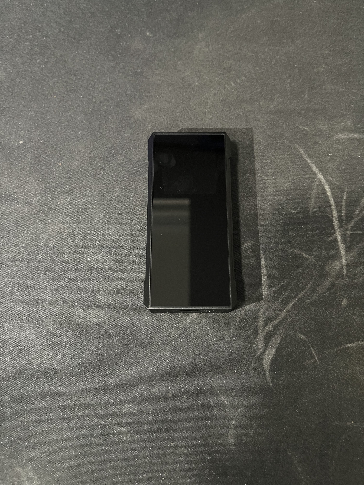
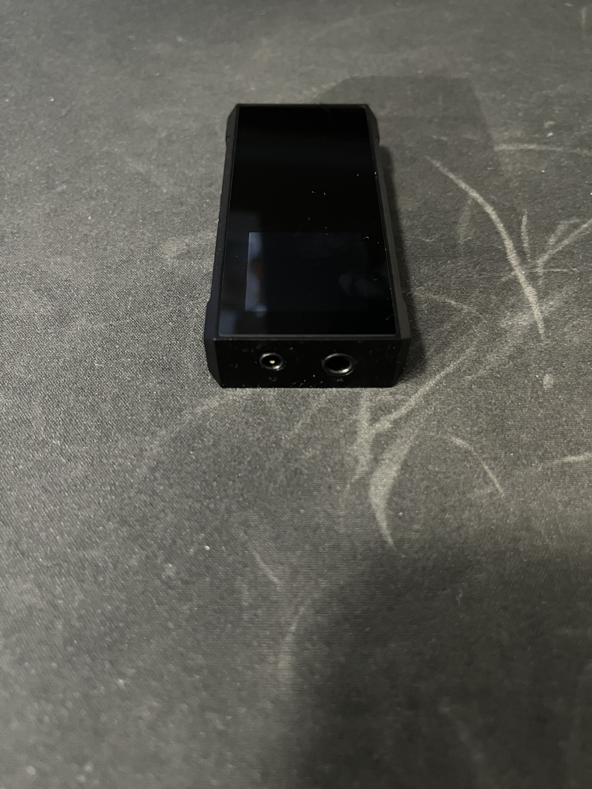

FiiO® BTR-7


FiiO® describes the BTR7 as a high-end member of the BTR series. It was introduced to the Bluetooth market with a better, more advanced audio circuit architecture than the BTR5 released a year ago. The first noticeable change is that instead of using conventional op amps, it uses a special module called THX AA-28, the fruit of a long-running R&D with the THX company. FiiO hasn’t changed anything in the DACs, which is normal. The reason is that ESS Technology has not yet developed a new DAC in the low-energy high-performance DAC range after the 9219 series. As always, I would like to emphasize the importance of implementation rather than technical specifications.
https://www.fiio.com/btr7